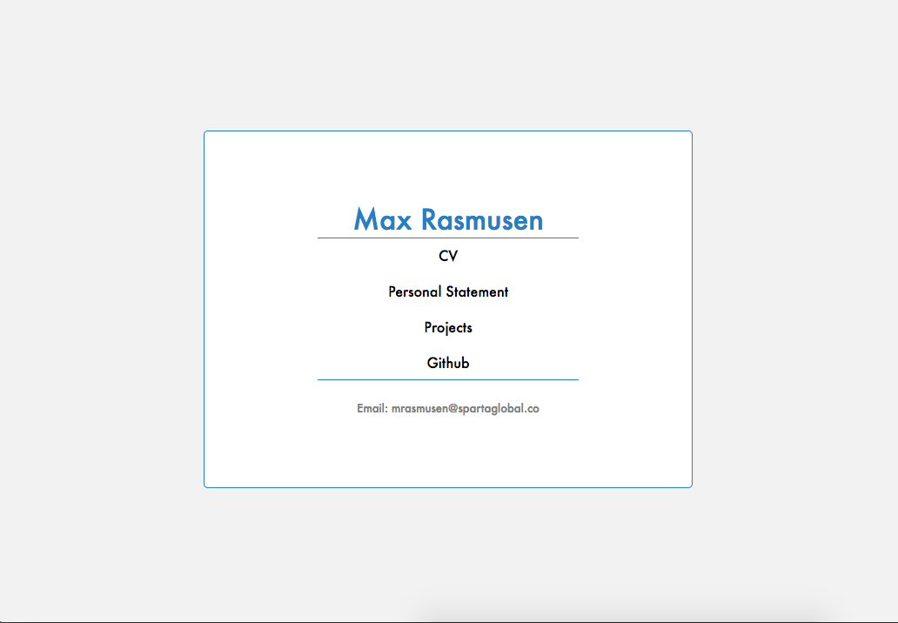
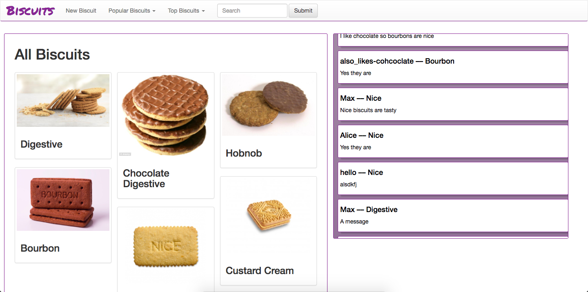

My Projects
- Personal Page
- Tetris
- Biscuits
Personal Page
Intro
The first project, or pseudo-project, that I have done at the Academy is this page. It is written using HTML and CSS, which I wrote from scratch. There are a few pages, each with different information. The CV page has information about my education, skills and past work. The personal statement page contains a statement about my goals and current position. This page, the projects page, shows the details of projects I have worked on. There is also a link to my github profile.
The main page has links to every other page on the site, as well as containing a mailto link to send me an email.
Screenshots
This is a screenshot just to give a feel of what the index page looks like, and the overall feel of the site.
Go to top of page. ↑Tetris
Project Overview
Our task for this project was to create a simple game to run in a browser using HTML, Javascript and CSS. For my game I chose to make Tetris. It turned out to be challenging, particularly rendering the game logic using only HTML and CSS, since the project guidelines dissalowed the use of the canvas tag. I used an object-oriented architecture to build the game, as it allowed for a much easier separation of concerns than another method.
Instructions
Basics
Blocks will fall from the top of the screen.
If they reach the top, the game ends
If you fill up every space in a row, that row disappears
Controls
J: Move left
L: Move right
K: Flip
Space: Go Fast
W: Pause
Q: Reset
Frames
In order to mimick frames, in the game, I have a function 'tick', which calls itself with a timeout. This makes it easy to interrupt or change the speed of frames, which is how the game is sped up and paused.
Rendering
This was the most challenging part of the project. The current board state is stored in a 10x20 Javascript matrix, with each element storing the type of tile at that position on the board. These can be either empty, terrain(already landed blocks), or the currently falling block. Each frame, this matrix is used to update the sytling of a list of HTML elements on the page to reflect what is currently stored at that location. By keeping the logical game state separate from the game's display, it is much easier to manipulate the game board without worrying about keeping track of a html elements.
Blocks
Once a block has landed, the only information we need to know is that certain tiles are full of terrain, so there is no extra functionality we need to deal with them. However, the currently falling block needs to update every turn, and must have collision detection applied to it each frame. To do this I use the block class. This stores the blocks position, and also its shape, which is stored as a 2d matrix of characters. To move the block horizontally and vertically, I only need to update it's x or y position. To rotate it, I rotate the shape matrix. This means the block does not have to store it's rotation, or apply it more than once.
Collision
Collision is done by creating a dummy block, and moving it in some way, either translation or rotation, and checking if there is any overlap with terrain or the edge of the screen. If there is, the movement is invalid and the block does move. Additionally, if the movement is downward, caused by the frame updating, the block has reached the bottom of the screen, or a piece of terrain, and stops. It is then transformed into terrain.
Go to top of page. ↑Biscuit Discussion Website
Project Overview
The task here was to build a website using the Sinatra framework that would implement all seven restful routes, and host data using a postgres database. My site was a discussion forum focused around users' favourite biscuits. This project used all the front-end languages of the Tetris project, plus ruby. I didn't have to directly write any SQL as I used the activerecord gem. I used some other third party gems to add some functionality to the website: imgurapi to upload images to imgur, and ransack to search. I also used bootstrap to implement the navbar. The final part of the project was to deploy the site to heroku.
Basic functionality
The basic required functionality was to implement seven restful routes for a single resource. In this case, that was biscuit pages. Each biscuit has it's own page, which users can view, create, edit and delete. Users can upload the name, description, rating and image for the biscuit. In addition to this, I added a messaging system that allowed users to send messages to each other and have the page update in real time.
Images
The most consistently challenging part of the project throughout was dealing with images. This is because of the deployment method we used. When a heroku deployment is updated, it wipes the filesystem and builds the project from git. This means that any images stored in the filesystem are lost. My way around this, in order to allow a user to upload an image from their computer, was to upload the image to imgur, an image hosting site, and save the url to the database. This involved using imgur's public API. I initially decided to use the imgurapi gem to simplify this process. However, the gem itself is buggy, and this caused me a few headaches. If I was to redo this project, I would not use the gem, and interact with the api directly using a gem like HTTParty.
Messages
Users can post messages to a discussion, and recieve them in real time. This is achieved by polling the server every 2 seconds for new messages, which are then added to the page. However, this method does not scale well and I am plannig on switching to websockets when I get the time.
Go to top of page. ↑